~3 Moving Around the Viewport~
12/30/2024
Move object across the screen without Spinning it
To Locate the Object if it goes off Screen
To Hide your Gizmo on your Object
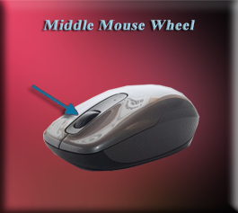
Ok, so here you are in the startup screen of your Blender program. In our last tutorial, we learned how to add an object to the viewport, so you are actually able to work with something that you want to work with.
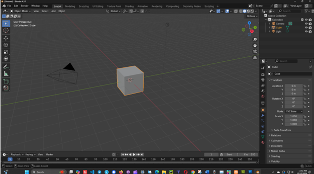
But how do we go about moving around this object, and seeing it from all sides. After all, this is a 3D project, and as a 3D object it isn’t supposed to just sit there like an image. We should be able to move around it.
The middle mouse wheel is the key to being able to move around your object. So, if you do not have a middle mouse wheel, it is best to get a mouse that does. Oh, you can fake things but setting up certain options in settings, but it is never going to work as well as actually having the wheel.
Zoom in and Out
Simply roll the middle mouse wheel up and down to zoom the object in and out.
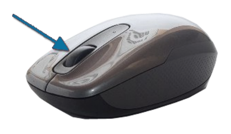
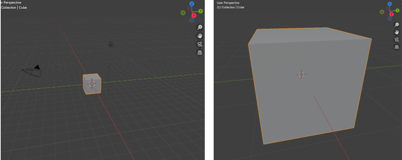
Spin the Object around
You can spin the object around, by holding down the Middle Mouse Wheel, and moving the mouse around. You can view top, bottom, and all the sides in this spin of the object. Just find the position that you want to view the object from and start working.
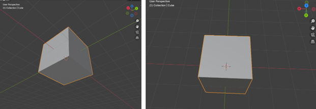
Move object across the screen without Spinning it
You may just want to move the entire object across the screen. Up, down, left, right without spinning it. To do this, first you want to hold down the Shift key, and then you want to hold down the Middle Mouse Key and move the mouse Up, Down, Right, or Left.
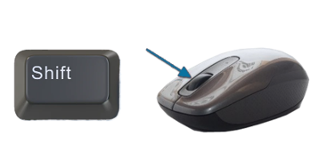
Moving Using the Gizmo
This thing is called the Gizmo, and by clicking on different parts of it, you can change the angle in which you are viewing your object. It may not be as fast and as efficient as the previous method, demonstrated above, but it is certainly an option.
Try clicking on the Z or the Y of this little Gizmo object on the viewport and watch the effect it has on your object on the screen.
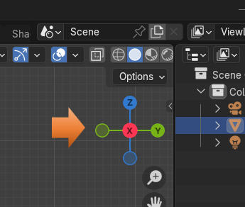
Using the Move Tool
Another Method is to grab the Move Tool, from the Tool menu on the left side of the viewport and to move the object with the gizmo that will appear on the object.
You can click on the Y, X or Z colored arrows of the little gizmo that appears on your object, and just start dragging it around the Viewport.
But , a thing to remember here is that when we do grab the Move tool, we are actually moving the object itself, and not just moving the orientation at which we are looking at our object.
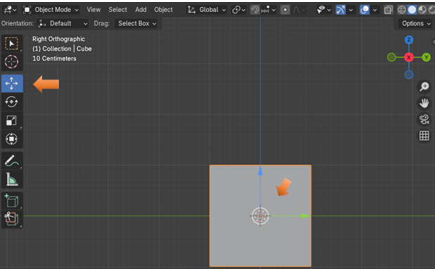
The G Hotkey
Another very simple way to drag your object around is to hold down the G key on your keyboard and just drag it around. G stands for grab, and this is essentially what it does. It grabs your object so you can move it.
The same thing with the G hot key, when we use this we are actually moving the object itself and not just the orientation at which we are looking at the object.
The View Menu
Another way, in which we can move around the viewport, so that we can better see the object is to use the View menu, located at the top of the Viewport. You want to click on View-View Point- and then just click on the View you want to see the object from.
Also notice that this menu will give you hot keys in which you can use to achieve the exact same action. Just be sure that you are using the numbers from the numpad on the right side of the keyboard, and not the numbers that are located at the top of the keyboard. Only the numpad numbers will work for these navigation actions.
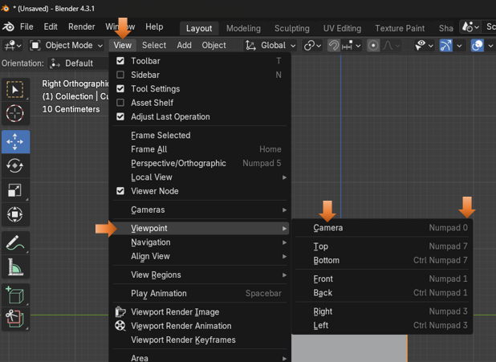
The Property Panel
The last way to move your object around in the viewport is to open the Object section in the property panel on the right of the viewport. You will see that you can type in very accurate numbers for the position of the object for Location X, Y or Z. You can also rotate the object as well as resize the object from this Transform section of the Objects Property panel
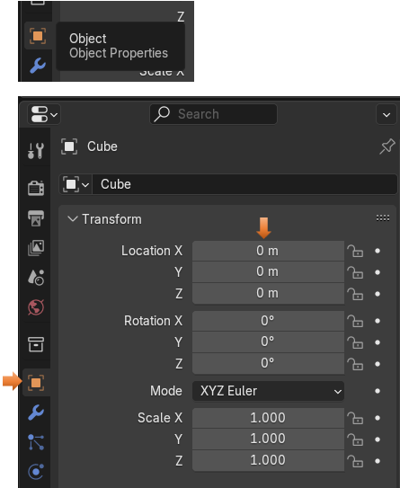
To Locate the Object if it goes off Screen
Occasionally, you may want to locate your object. If your scene has a lot of stuff in it, or for some reason, you sent the object’s location way off the screen, you may want to find it. There is an easy way to do this.
Just locate the Object in the Scene Collection and click on it to select it.
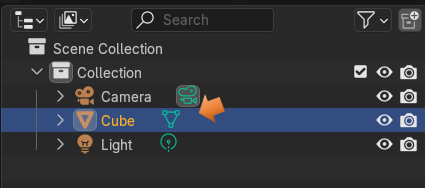
Zoom way out on your object to try this trick. Remember to zoom out, all you need to do is to roll the middle mouse button.
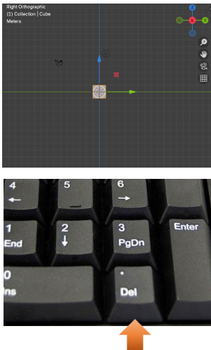
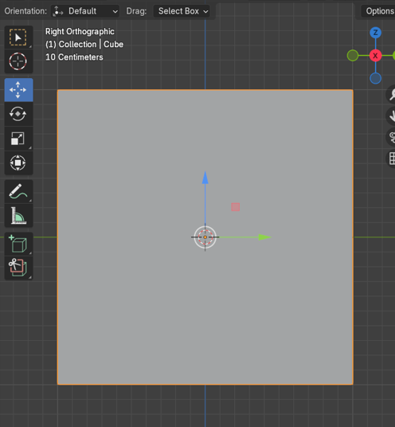
To Hide your Gizmo on your Object
Sometimes having the gizmo showing on your object can be a distraction. This probably will never be the case while you are a beginner, but as time goes on you might want to work without the thing there. Well, there is a way to temporally turn it off. Just remember to turn it back on when you do want to work with it again.
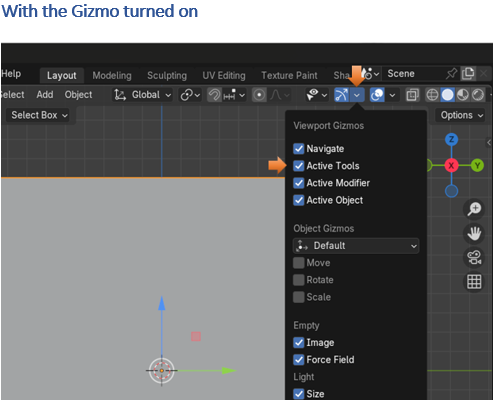
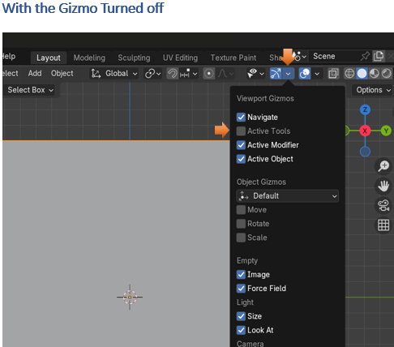
Well, that is just about everything that you need to know about moving around in the viewport for now. Good luck and happy navigating. Just have fun!